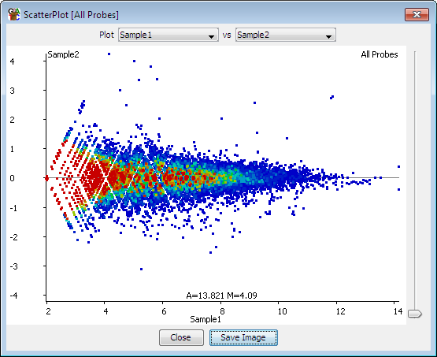

The MA plot allows you to look at the relationship between intensity and difference between two data stores for the currently selected probe list. It creates a 2-dimensional plot with a point for each probe. The x-axis represents the average quantitated value across the data stores, and the y axis shows the difference between them.

From the panel at the top of the plot you can select the two datastores you would like to plot. Both of these stores need to be quantitated. The plot will update as soon as you select a new data store.
You can use the slider on the right of the plot to adjust the size of each of the points in the plot which may make things clearer for densely or sparsely packed plots.
At the bottom of the plot you can see the current values which would fall under the current cursor position.